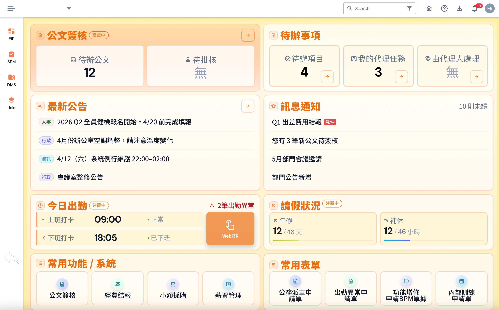

透過五則真實需求誤讀案例，說明 PM 與設計師對同一句 User 反饋可能走向完全不同解法，主張 PM 應帶設計師進場、只傳達需求不預設設計方向。
問題
User 的口頭反饋常被 PM 直接翻譯成具體設計指令（放大字體、改排版、做 N 種版型），導致設計方向被過早鎖死，真正問題未被釐清。
解法
邀請設計師一起面談；現場釐清是顏色／字體／資訊架構等哪類問題；用 Demo 或減法設計驗證；必要時當場 STOP 不當需求。
成果摘要
案例顯示：看似「字太小」實際是配色問題，調完回到原設計配色
深入說明
核心主張
同樣一句 User 反饋，PM 與設計師理解可以截然不同。帶設計師一起談，才能在現場釐清真正問題。PM 只要說 User 需求，不要定死設計方向。
方法一：傳圖給 User 自己看
不是只介紹畫面長什麼樣，而是設計師向 User 說明設計理念與決策，讓對方理解「為什麼要這樣設計」。
方法二：User 想要的不一定是對的
需要專業建議時，設計師在場才能即時介入、給出正確方向（例如 STOP 不當的 Filter 外提）。
案例精選（已去識別）
EX1 標題看不清→釐清顏色 vs 字體；EX2 看不到重點→減法收納；EX3 多版型多顏色→合理收斂稿數；EX4/EX5 現場介入避免錯走。
成果
- 案例顯示：看似「字太小」實際是配色問題，調完回到原設計配色
- 「看不到重點」用減法收納資訊，而非只放大文字
- 「三版型三顏色」從 12 稿收斂為 3 個合理組合
- 不當的手機 Filter 外提需求被現場攔下，避免破壞體驗
精選畫面


